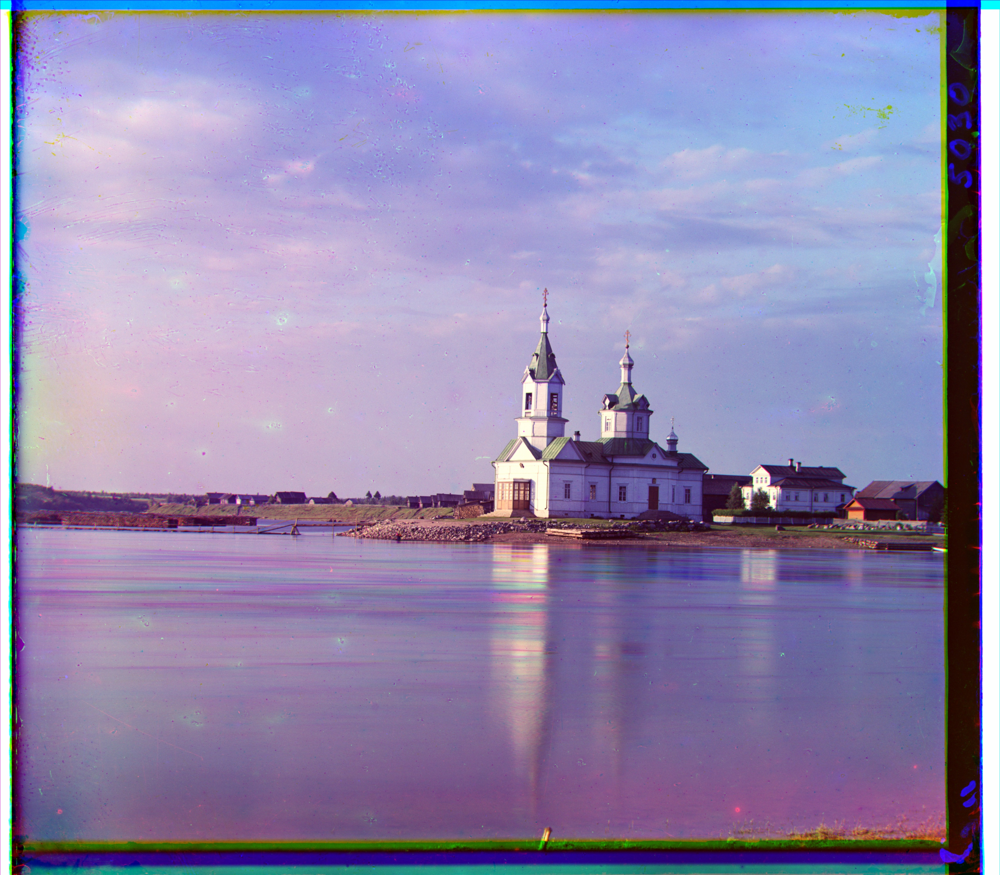
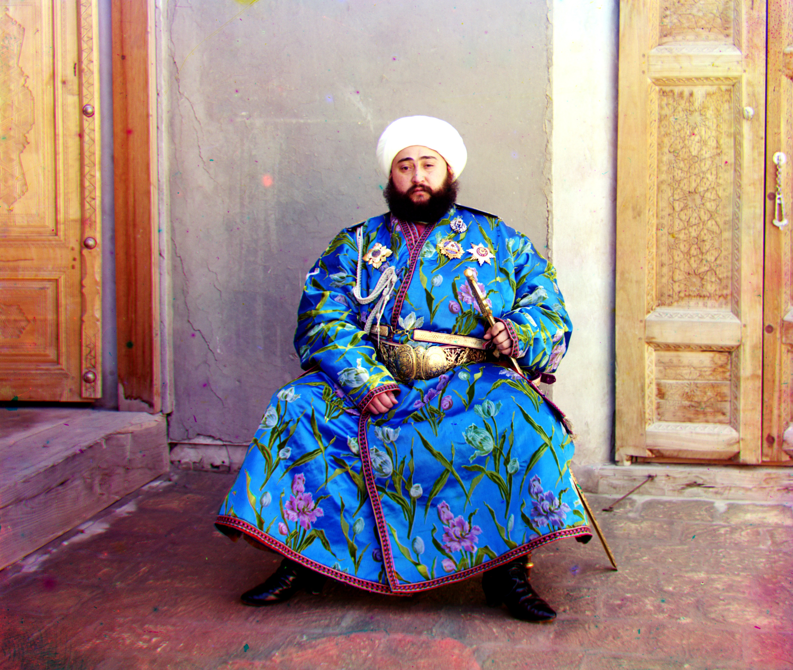
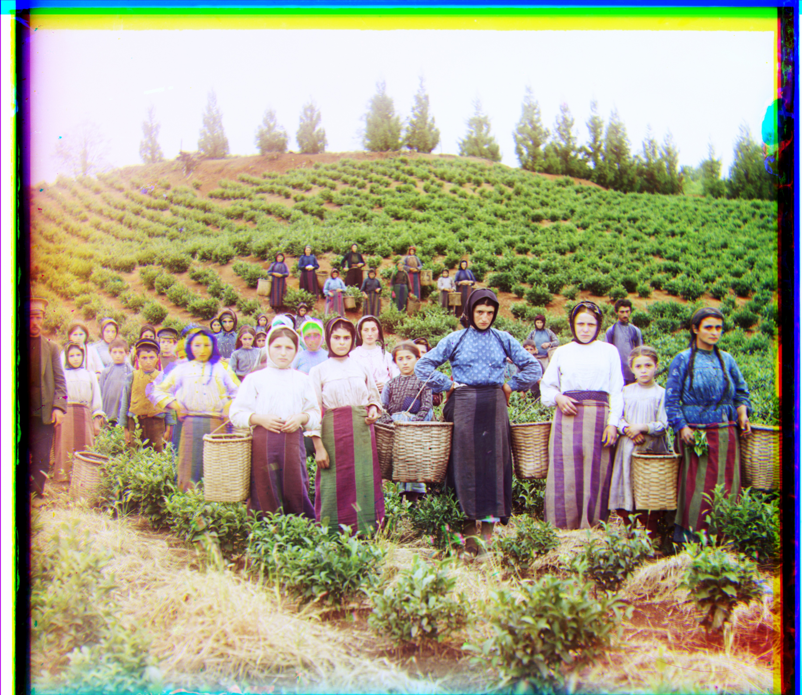
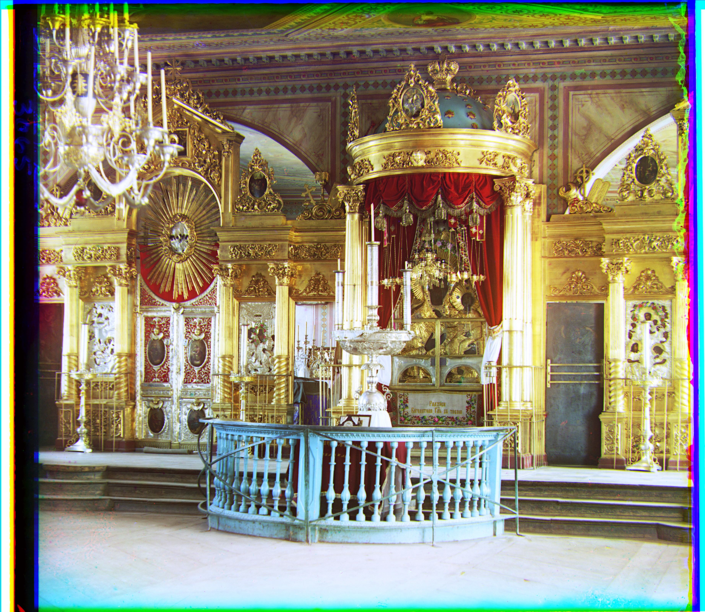
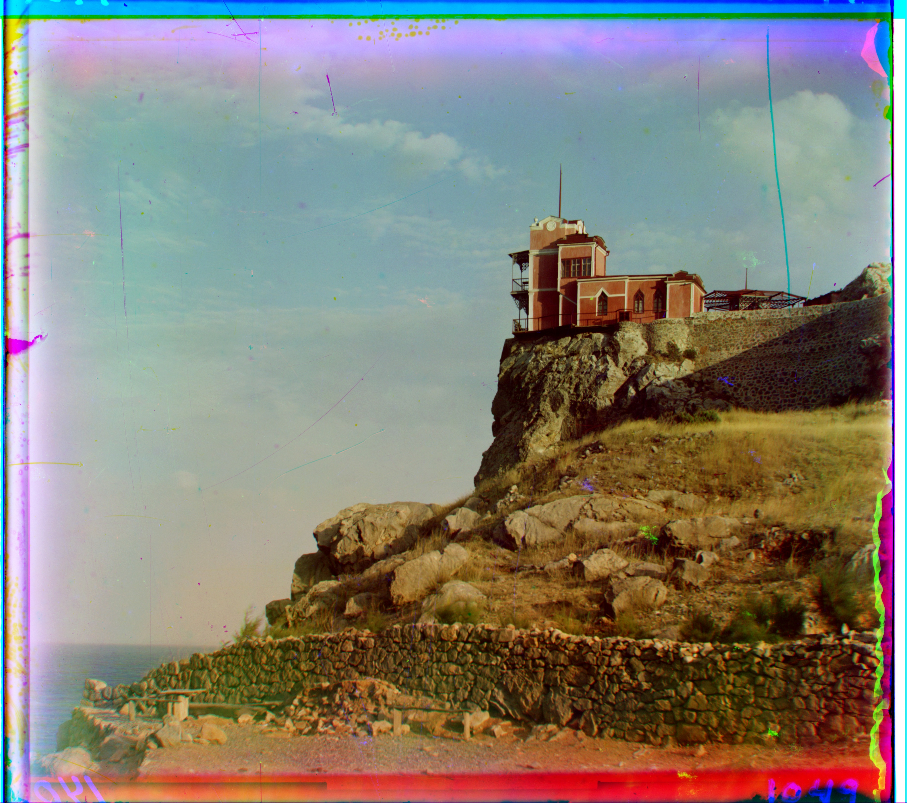
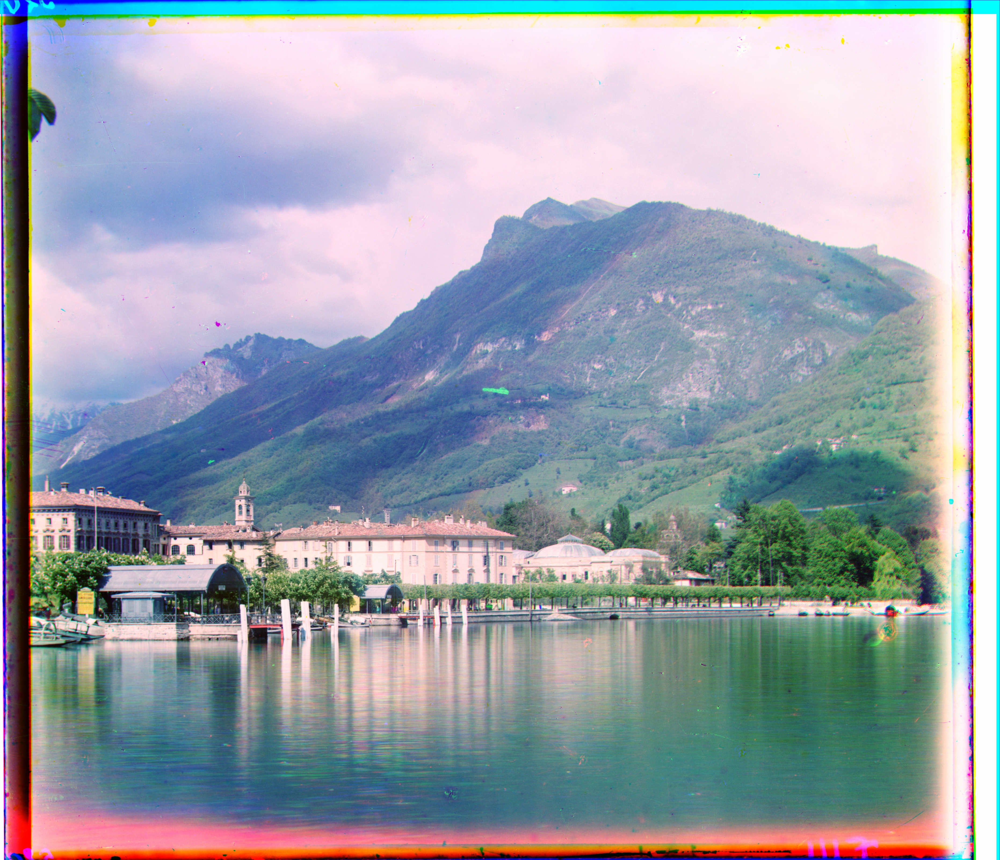
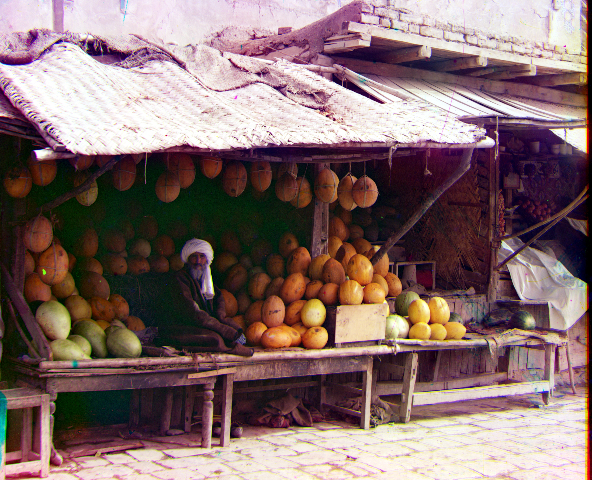
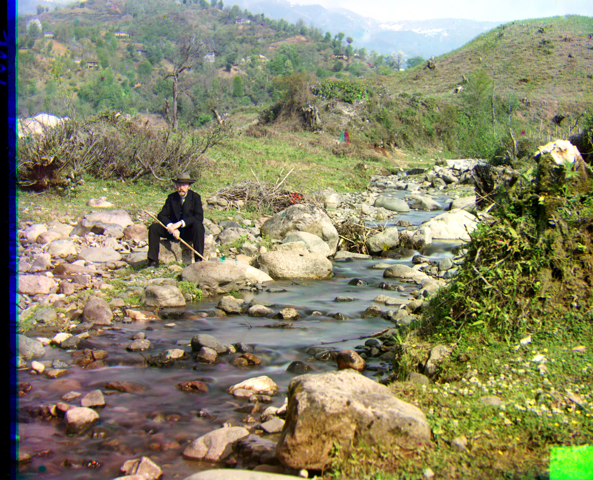
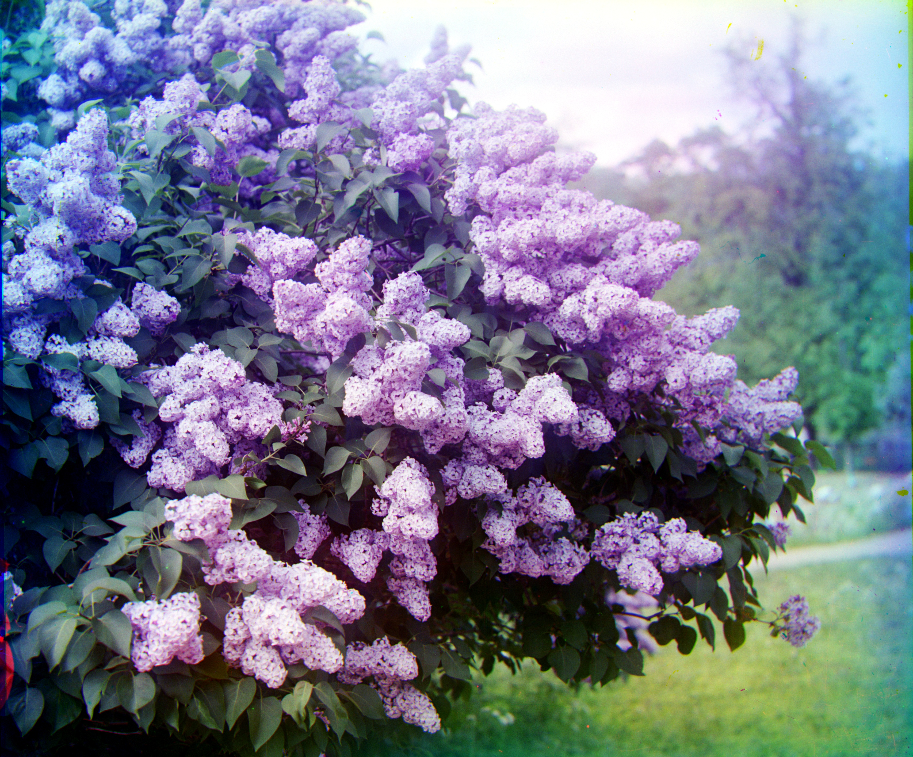
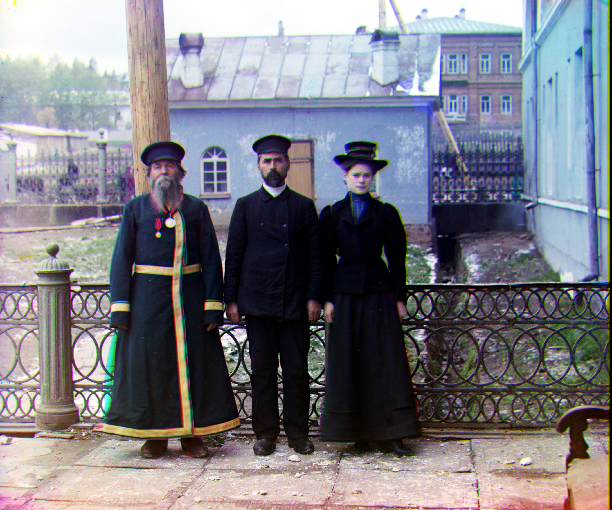

🔺 Multi-Scale Pyramid Results (11 Main TIFF Files)
Results using pyramid alignment on high-resolution glass plate scans:
Pyramid NCC
church.tif

Green offset: (dy, dx) = (-1, -5)
Red offset: (dy, dx) = (54, -6)
Processing time: 13.9s
Red offset: (dy, dx) = (54, -6)
Processing time: 13.9s
Pyramid NCC + Edges
emir.tif

Green offset: (dy, dx) = (12, 8)
Red offset: (dy, dx) = (109, 17)
Processing time: 12.3s
Note: Used edge-based features
Red offset: (dy, dx) = (109, 17)
Processing time: 12.3s
Note: Used edge-based features
Pyramid NCC
harvesters.tif

Green offset: (dy, dx) = (119, -3)
Red offset: (dy, dx) = (121, 7)
Processing time: 15.7s
Red offset: (dy, dx) = (121, 7)
Processing time: 15.7s
Pyramid NCC
icon.tif

Green offset: (dy, dx) = (41, 16)
Red offset: (dy, dx) = (90, 22)
Processing time: 11.2s
Red offset: (dy, dx) = (90, 22)
Processing time: 11.2s
Pyramid NCC

italil.tif
Green offset: (dy, dx) = (38, 18)
Red offset: (dy, dx) = (77, 34)
Processing time: 13.1s
Red offset: (dy, dx) = (77, 34)
Processing time: 13.1s
Pyramid NCC
lastochikino.tif

Green offset: (dy, dx) = (-3, -2)
Red offset: (dy, dx) = (143, -3)
Processing time: 16.4s
Red offset: (dy, dx) = (143, -3)
Processing time: 16.4s
Pyramid NCC
lugano.tif

Green offset: (dy, dx) = (23, -11)
Red offset: (dy, dx) = (92, -28)
Processing time: 14.8s
Red offset: (dy, dx) = (92, -28)
Processing time: 14.8s
Pyramid NCC
melons.tif

Green offset: (dy, dx) = (80, 10)
Red offset: (dy, dx) = (177, 13)
Processing time: 9.6s
Red offset: (dy, dx) = (177, 13)
Processing time: 9.6s
Pyramid NCC
self_portrait.tif

Green offset: (dy, dx) = (71, -1)
Red offset: (dy, dx) = (151, -4)
Processing time: 13.9s
Red offset: (dy, dx) = (151, -4)
Processing time: 13.9s
Pyramid NCC
siren.tif

Green offset: (dy, dx) = (48, -7)
Red offset: (dy, dx) = (99, -21)
Processing time: 19.1s
Red offset: (dy, dx) = (99, -21)
Processing time: 19.1s
Pyramid NCC
three_generations.tif

Green offset: (dy, dx) = (52, 5)
Red offset: (dy, dx) = (110, 7)
Processing time: 17.2s
Red offset: (dy, dx) = (110, 7)
Processing time: 17.2s